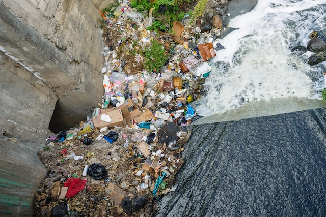
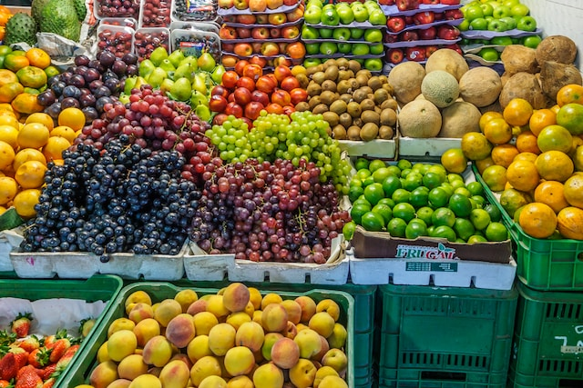

|
|
Produccion de Comida y Agua Responsable
Desacoplar el Crecimiento de Recursos con la Explotación de Recursos
-
Menos del 3% del agua del mundo es potable y sólo el 0,5% se utiliza para satisfacer las necesidades humanas y de los ecosistemas.
-
La contaminación del agua está superando la capacidad de la naturaleza para limpiarla y más de mil millones de personas no tienen acceso a agua potable limpia.
-
Se calcula que un tercio de toda la comida producida en el año, se desperdicia, y termina en la basura. Esta cantidad equivale a 1300 millones de toneladas con un valor de 1000 millones de dólares.
-
Los productores de comida representan un 30% del consumo de energía, además de generar el 22% de las emisiones de gases de efecto invernadero.
(Moran, 2020)

Se considera que la mayoría de los impactos ambientales se generan desde la producción de los alimentos. Sin embargo, la producción de alimentos masiva es influenciada por la elección de los hogares y sus hábitos, que en su mayoría, terminan desperdiciando.
El aumento de la población, ha desconcertado la posibilidad de garantizar comida a todos. Con la deterioración de los recursos naturales, se ha visto reducida una gran parte de la producción de alimentos, menos comida, menos agua, pero más gente. Por lo que a consecuencia de esto, se busca una solución sostenible y responsable por parte de la sociedad, para que todos puedan gozar de sus propios alimentos.
Una posible solución planteada, es que los productores cultiven al tiempo que reducen los impactos ambientales negativos como la pérdida de suelo, agua y nutrientes. Al mismo tiempo, se necesita alentar y cambiar las dietas y hábitos de la gente, para que sea más saludable para ellos y el medio ambiente.
Empresas en Busca del Objetivo
Existen muchas empresas a nivel nacional que contribuyen a los objetivos de desarrollo sustentable. En el caso del agua y la comida existen muchas que buscan maximizar sus productos, que sean los menos contaminantes, y al mismo tiempo causar un efecto en la sociedad en busca del cambio.
MODELO
En el primer caso está el grupo Modelo, la cual es empresa líder en actividades de voluntariado corporativo. En sus productos buscan que todos los envases sean de materiales reciclados y retornables. Al mismo tiempo, hacen actividades voluntarias ayudando a la sociedad, reforestando, sembrando, y buscando una forma de que la sociedad se alimente de manera sustentable.
(ExpokNews, 2021)
CHR. HANSEN
A nivel internacional, Chr. Hansen es clasificada como la empresa más sostenible del mundo. En Chr Hansen, se desarrollan soluciones con ingredientes naturales para las industrias de alimentación, proveen cultivos bacterianos, probióticos y enzimas. Esta empresa sabe y concientiza que los recursos en el planeta tierra no son ilimitados, por lo cual buscan soluciones más naturales y saludables para problemas que se enfrentan al día de hoy, como el desperdicio de comida y el abuso de antibióticos.
(Chr. Hansen, 2019)

Acciónes de la Comunidad
La meta es conseguir que todos sigan dietas sostenibles y saludables ya que estas son lo mejor para las personas, y para el impacto ambiental. Entre los pasos a seguir se encuentran los siguientes:
- Seguir una dieta balanceada.
- Reducir el consumo de lácteos, pescados y carnes. Esto debido a que estos productos vienen de origen animal, y el sector de la producción animal forma un porcentaje bastante alto de las emisiones de dióxido de carbono.
- Elegir lo natural en lugar de los alimentos procesados. Productos locales libres de plaguicidas y químicos.
-
Comprar solo lo necesario y lo que se va a consumir para no desperdiciar más.
|
|